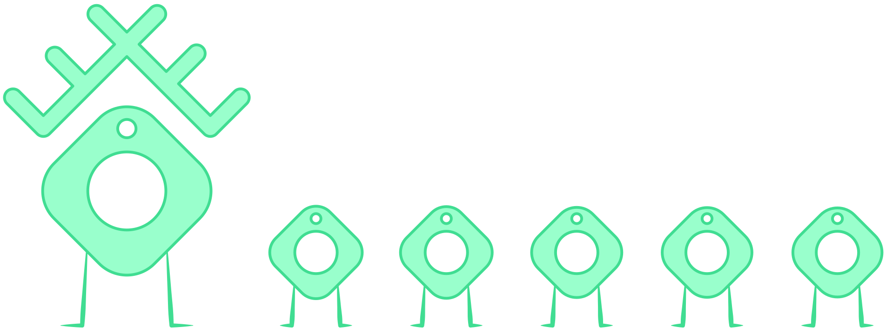
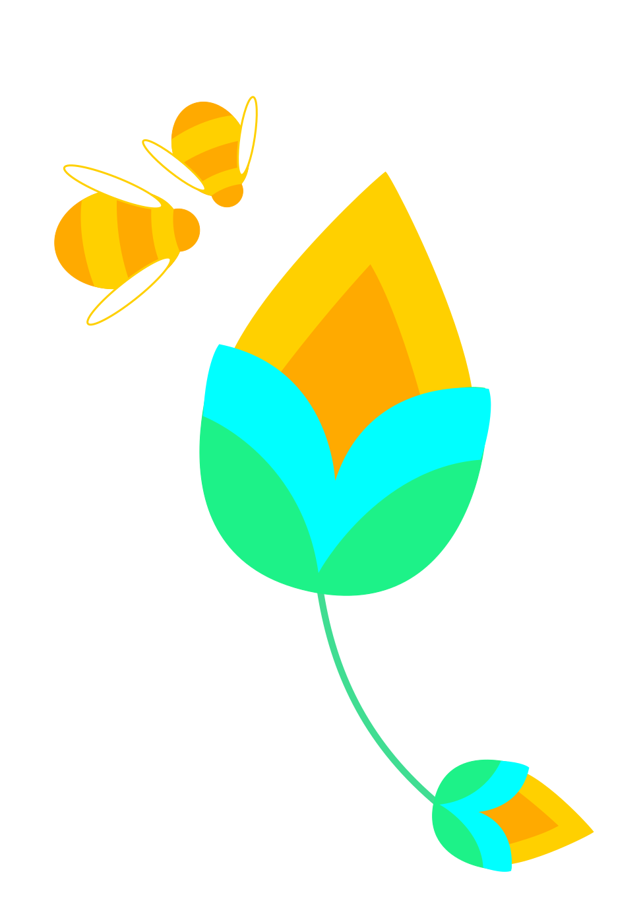
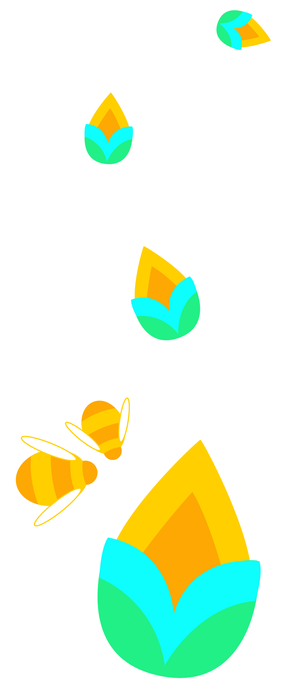

We will build an authentic tribe of followers for your brand
01. Finding your followers

We will research your brand to identify and attract the right followers for you. Firstly we find what your brand offers, and who your main competitors are. Then we look into your desired audience - who they are, where they are, what they love, and what they need.
02. A human touch

Frequency and timing of engagements are everything - but your followers will react best to the personal element. We aim to maximise your following, while engaging with them in a way that builds empathy and confidence.
03. Research, adapt & create

We monitor and report results, measure growth and continuously optimise the system, to increase the number and quality of your followers. Additionally, we offer content management, and creative proposals on visual style and impact.

04. Do what you do best!

We know you’ve got enough to do running your busy personal brand. So while you’re doing what you do best, we’ll be continuously growing your Instagram audience.
